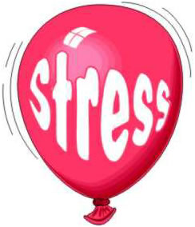

Young Pathanjali tells us why! few years ago, I had an opportunity to talk to a large group of respected and prominent people in a town lying very close to the western Ghats in Kerala. The occasion was the annual meeting of a famous club. As some of the organisers knew me from my younger days, and as they thought that I was somebody who could talk to them of 'Eastern and Western cultures', I was given a ticket to enter the auditorium. When I entered the hall, I had no idea that the platform was being shared by 'local' dignitaries, who have travelled around the world many times and had a broader experience than me in relation to the topic of the discussion.
They all had at least 30 plus years of world experience than me. The situation became more complex and stressful for me when I heard that some 'foreign' dignitaries were going to arrive. Then I realised that they were not real dignitaries flown in for this session, but some French Engineers, who happen to be in town and coincidentally was residing in the same hotel, where the function was being held. 
Well, I had my chance to deliver the talk and I thought I blew it because I talked extensively of the stress-ridden western life and the rich, peaceful and everlasting culture of Mother India. Then came the French man, who agreed with every humble word that I uttered and explained the simplicity and happiness that embodies the faces of ordinary folk in Kerala, who are leading a stress-free life despite all the various mundane difficulties they face in their ordinary life.
Well then, what is stress?
Most of us experience stress in daily life in a range of situations. You can experience stress at home, family tensions, work related stress, stress on the road (which has been recently coined as road rage), stress at school and college, stress in relationships and some people experience stress in everything they do. The word 'stress' is sometimes used to refer to those situations and conditions which place individuals under some pressure, involve some adjustment in their behaviour and can cause changes which are unpleasant, sometimes maladaptive or even associated with physical damage, So, stress is a physical, chemical or emotional development that causes strains that can lead to physical illness.
An international authority on stress, the Canadian physician Hans Selye identified three stages in the stress response. In the first stage, alarm, the body recognises the stress and prepares for action, either to fight or escape. Endocrine glands release hormones that increase heartbeat and respiration, elevate blood sugar, increase perspiration, dilate the pupils, and slow the digestion. In the second stage, resistance, the body repairs any damage caused by the alarm reaction. If the stress continues, however, the body remains alert and cannot repair the damage. As resistance continues, the third stage, exhaustion, sets in and a stress-related disorder might result. Prolonged exposure to stress depletes the body's energy and can even lead to death. Many diseases can be brought on or worsened by psychological stress. Some kinds of headache and back and facial pain, asthma, stomach ulcers, high blood pressure, and pre-menstrual stress, are examples of stress- related disorders.
Physicians have long recognised that people are more susceptible to diseases of all kinds when they are subjected to great stress. Negative events such as the death of a loved one seem to cause enough distress to lower the body's resistance to disease. Positive circumstances, however, such as a new job or a new baby in the house, can also upset a person's normal ability to fend off disease. Psychologists have devised a list of life events and rated the relative stressfulness of each. Thus, the death of a spouse rates a 100 on the scale, whereas trouble with one's employer rates 23; being fired, 47; going to jail, 63; getting divorced, 73; and so on.
High blood pressure, or hypertension, is one of the most common disorders made worse by stress. It afflicts an estimated 15 to 20 out of every person living in the industrialised society. Although it has no noticeable symptoms, hypertension can damage the kidneys and can lead to stroke. Other stress-related disorders that are even more common are gastro-intestinal problems. More serious are peptic ulcers and anorexia nervosa. Anorexia nervosa, a disorder most common among adolescent girls, is characterised by a refusal to eat—to the extreme that death may result. Respiratory disorders also can be affected by stress. Most common of these is asthma which may be caused by emotional upsets. Asthma attacks are characterised by wheezing, panting and a feeling of being suffocated. In addition, emotional stress can cause or aggravate many skin disorders, from those that produce itching, tickling and pain to those that cause rashes and pimples. Major traumatic events such as accidents, catastrophes or battle experiences may bring on a condition now called post traumatic stress disorder (PTSD).
Stress is experienced by people of all cultures, There is some evidence to suggest that people who have migrated to industrialised societies in search of employment, who may have led relatively stress- free lives, experience more stress and anxiety.
How to combat stress?
If you feel that you are getting stressed, sit quietly and take few deep breaths. Identify the stress trigger, if you can. Try and avoid the triggers as far as possible. Even better overcome this through positive thought and exercises. Yoga and meditation, the gem medicine of India, is an effective approach here.
Talk to people. Yes, I mean just talk. Talk to other people, your boss, teacher, friend, partner, husband, wife, brother or sister about how you feel. It is important to use the natural gift of communication and interaction to resolve stress triggers. Some people may use alcohol to relieve the stress. Small amounts of alcohol with friends may be helpful, but large doses only result in producing more stress and depression.
Diverting you energy into useful hobbies and leisure activities will enable you to relax and recharge your batteries. Relaxation is an important aspect of life and the benefits of relaxation in leading a better and positive life has been documented in Indian as well as western Psychology.
"Use your brain" It has the power to think, analyse and reflect on stress triggers and to find possible solutions. So use your natural gift. Accept and acknowledge own weaknesses and faults and try to rectify them rather than constantly trying to point fingers at other people about their weaknesses and faults.
So my friends, enjoy life while you can. Yoga and relaxation, positive thinking, smiling and happy behaviour will allow you to lead a full, successful and stress-free lives.